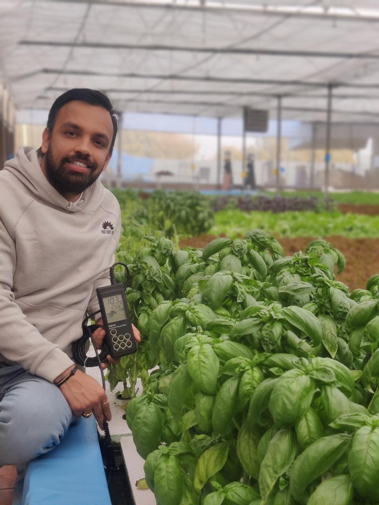
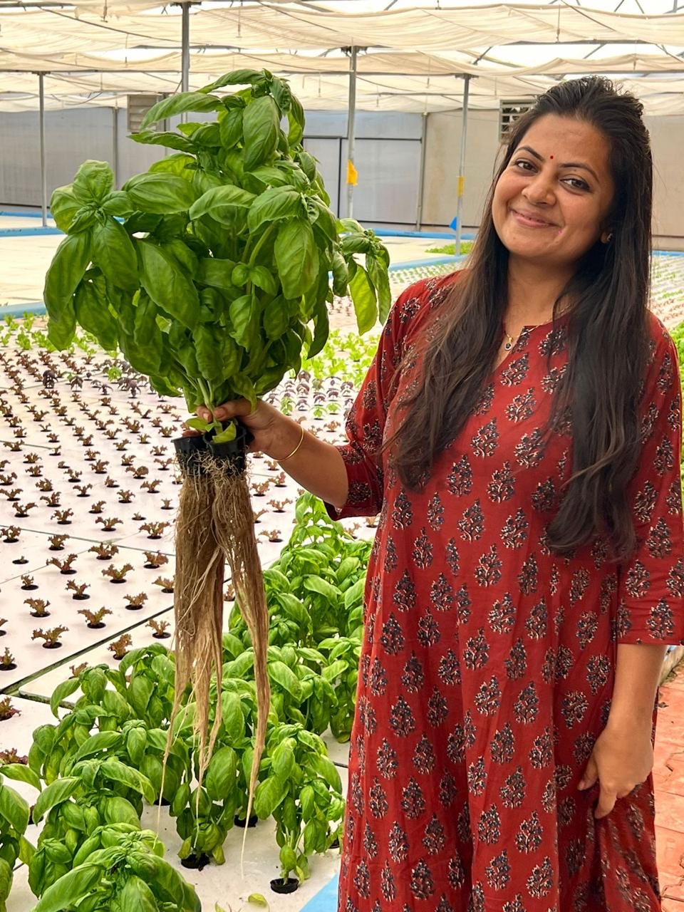

Meet the Team

Anshuman Chaturvedi
Co-Founder & CEO
Pioneer in sustainable aquaponics farming, visionary behind Zyqua Greens. A sustainable agriculture farmer and entrepreneur with over 10 years of experience in organic farming and innovative food production systems, building climate-resilient, environmentally responsible agriculture through aquaponics.

Dr. Mona Parmar
Co-Founder & CTO
Agriculture scientist leading research and cultivation practices. PhD in Climate Change & Agriculture with over 8 years of research experience across climate change, agriculture, aquaponics, and sustainable farming systems.
To build a future where fresh, healthy, and sustainable food is accessible to all — while protecting our planet and conserving its precious resources.
Our Story
Ten years ago, Mr. Anshuman Chaturvedi asked himself one simple question: where could he find truly clean, nutritious food for his family?
The question came from a hard reality. Around him, friends, relatives, even young people, were falling sick with lifestyle diseases more than ever before — and every doctor he spoke to said the same thing: the problem doesn't start in the hospital, it starts on the farm, in the food eaten every day.
That realisation changed the course of Anshuman's life. He dedicated himself to sustainable farming, travelling across India to meet farmers and researchers who still held onto traditional wisdom. That search led him to the Integrated Aqua-Vegeculture System — iAVS — originally developed by Dr. Mark McMurtry, and spent years learning it, adapting it to Indian conditions. What hooked him was simple: a system that grows healthy food using nature's own cycles, with no synthetic fertilizers and no chemical pesticides.
At the same time, Mona was pursuing her PhD in climate change and its effects on agriculture. Anshuman's growing knowledge of iAVS inspired her to bring her own research into integrated farming — combining his field experience with her research experience to build and test their own prototype, proving it could grow clean, nutrient-dense vegetables far more efficiently than conventional farming.
That prototype became the foundation of Zyqua Greens.